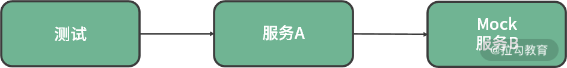
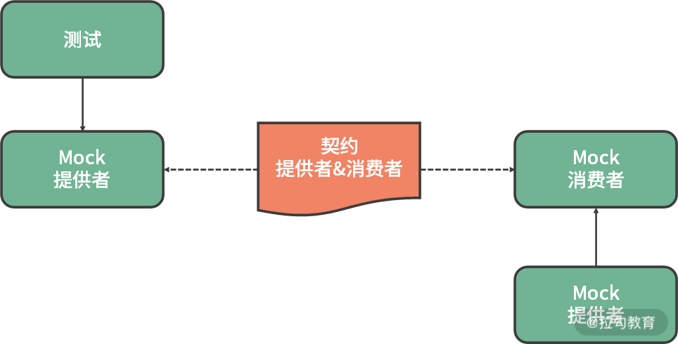

- 00 开篇词 既往不恋，当下不杂，未来不迎.md.html
- 01 微服务架构有哪些特点？.md.html
- 02 微服务架构下的质量挑战.md.html
- 03 微服务架构下的测试策略.md.html
- 04 单元测试：怎样提升最小可测试单元的质量？.md.html
- 05 集成测试：如何进行微服务的集成测试？.md.html
- 06 组件测试：如何保证单服务的质量？.md.html
- 07 契约测试：如何进行消费者驱动的契约测试？.md.html
- 08 端到端测试：站在用户视角验证整个系统.md.html
- 09 微服务架构下的质量保障体系全景概览.md.html
- 10 流程规范篇：高速迭代的研发过程需要怎样的规范？.md.html
- 11 测试技术篇：测试技术这么多，我该如何选型？.md.html
- 12 测试技术篇：如何提升测试效率？.md.html
- 13 测试技术篇：专项测试技术解决了哪些专项问题？.md.html
- 14 CICD 篇：如何更好地利用多个“测试”环境？.md.html
- 15 CICD 篇：如何构建持续交付工具链？.md.html
- 16 度量与运营篇：如何做好质量和效率的度量与运营？.md.html
- 17 度量与运营篇：如何度量与运营效率和价值？.md.html
- 18 组织保障篇：质量是设计出来的.md.html
- 19 软件测试新趋势探讨.md.html
- 20 结束语 QA 如何打造自身的核心竞争力？.md.html
07 契约测试：如何进行消费者驱动的契约测试？
上一课时，我讲到了微服务架构下的组件测试，它是针对单个微服务的验收测试，虽然保障了单个微服务功能的正确性，但要想保障微服务间交互功能的正确性，就需要进行契约测试。
契约测试产生的背景
在介绍契约测试之前，首先来看下什么是契约。现实世界中，契约是一种书面的约定，比如租房时需要跟房东签房屋租赁合同、买房时需要签署购房合同、换工作时你要跟公司签署劳动合同等。在信息世界中，契约也有很多使用场景，像 TCP/IP 协议簇、HTTP 协议等，只是这些协议已经成为一种技术标准，我们只需要按标准方式接入就可以实现特定的功能。
具体到业务场景中，契约是研发人员在技术设计时达成的约定，它规定了服务提供者和服务消费者的交互内容。可见，无论是物理世界还是信息世界，契约是双方或多方共识的一种约定，需要协同方共同遵守。
在微服务架构中，服务与服务之间的交互内容更需要约定好。因为一个微服务可能与其他 N 个微服务进行交互，只有对交互内容达成共识并保持功能实现上的协同，才能实现业务功能。我们来看一个极简场景，比如我们要测试服务 A 的功能，然而需要服务 A 调用服务 B 才能完成，如图：
服务 A 所属的研发测试团队在测试时，太难保证服务 B 是足够稳定的，而服务 B 的不稳定会导致测试服务 A 时效率下降、测试稳定性降低。因为，当服务 B 有阻塞性的缺陷或者干脆宕机时，你需要判断是环境问题还是功能缺陷导致的，这些情况在微服务的测试过程中属于常见的痛点问题。因此，为了提升测试效率和测试稳定性，我们会通过服务虚拟化技术来模拟外部服务，如图：

需要特别注意的是，如果此时你针对内部系统的测试用例都执行通过了，可以说明你针对服务 A的测试是通过的吗？答案是否定的。因为这里面有个特别重要的假设是，服务虚拟化出来的Mock B 服务与真实的 B 服务是相等的。而事实是，它们可能只在你最初进行服务虚拟化时是相等的，随着时间的推移，它们很难保持相等。

可能你会说，保持相等不就是个信息同步的工作嘛，有那么难吗？事实上，说起来容易做起来真的挺难：在实际的研发场景下，一个研发团队需要维护若干（a）个服务，每个服务又有数十（b）个接口，每个接口又被多（c）个团队的服务所调用，可见信息同步的工作量是巨大的（abc）。
所以在微服务团队中，如下情况极为常见，每一项都会导致信息不同步：服务 B 的开发团队认为某次修改对服务 A 无影响，所以没告诉服务 A 的开发团队，而实际上是有影响的；服务 B 的开发团队认为某次修改对服务 A 有影响，而服务 A 的开发团队认为无影响；服务 B 的开发团队忘记把某次修改同步到服务 A 的开发团队。
所以，比较好的方式就是通过“契约”来降低服务 A 和服务 B 的依赖。具体指导原则为：
- 根据服务 A 和服务 B 的交互生成一份“契约”，且契约内容的变化可以及时感知到，并生成模拟服务；
- 将服务之间的集成测试，变成两个测试，即真实的服务 A 和模拟服务 B 之间的测试和模拟的服务 A 和真实服务 B 之间的测试。

契约测试示意图
理解了契约测试产生的背景，我们来讲解下微服务架构下契约测试的具体含义。
契约测试介绍
在微服务架构下，契约（Contract）是指服务的消费者（Consumer）与服务的提供者（Provider）之间交互协作的约定。契约主要包括两部分。
- 请求（Request）：指消费者发出的请求，通常包括请求头（Header）、请求内容（URI、Path、HTTP Verb）、请求参数及取值类型和范围等。
- 响应（Response）：指提供者返回的响应。可能包括响应的状态码（Status Word）、响应体的内容（XML/JSON） 或者错误的信息描述等。
契约测试（Contract Test）是将契约作为中间标准，对消费者与提供者间的协作进行的验证。根据测试对象的不同，又分为两种类型：消费者驱动 和 提供者驱动。最常用的是消费者驱动的契约测试（Consumer-Driven Contract Test，简称 CDC）。核心思想是从消费者业务实现的角度出发，由消费者端定义需要的数据格式以及交互细节，生成一份契约文件。然后生产者根据契约文件来实现自己的逻辑，并在持续集成环境中持续验证该实现结果是否正确。
为什么要进行消费者驱动的契约测试呢？在微服务架构下，提供者和消费者往往是一对多的关系。比如，服务提供者提供了一个 API，该服务会被多个不同的消费者所调用，当提供者想要修改该 API 时，就需要知道该 API 当前正在被多少消费者所调用，具体是怎样调用的。否则，当提供者针对该 API 进行逻辑或字段的修改（新增、删除、更新）时，都有可能导致消费者无法正常使用。而消费者驱动的契约测试相当于把不同消费者对该 API 的需求暴露出来，形成契约文件和验证点，提供者完成功能修改后对修改结果进行验证，以保障符合消费者的预期。
工欲善其事，必先利其器。要想做某类测试，一个好的测试框架是必不可少的。在契约测试领域也有不少测试框架，其中两个比较成熟的企业级测试框架：
- Spring Cloud Contract，它是 Spring 应用程序的消费者契约测试框架；
- Pact 系列框架，它是支持多种语言的框架。
因为 Pact 的多语言特性，它也是实际工作过程中使用最频繁的框架。为了加深对契约测试的理解，我们来看一个基于 Pact 框架的契约测试的实例。
契约测试实例
契约内容
如下所示，服务提供者为 userservice，消费者为 ui，契约内容包含了 POST 请求 /user-service/users，传参为对象 user， 并返回 201 和创建用户的 id。
{
"consumer": {
"name": "ui"
},
"provider": {
"name": "userservice"
},
"interactions": [
{
"description": "a request to POST a person",
"providerState": "provider accepts a new person",
"request": {
"method": "POST",
"path": "/user-service/users",
"headers": {
"Content-Type": "application/json"
},
"body": {
"firstName": "Arthur",
"lastName": "Dent"
}
},
"response": {
"status": 201,
"headers": {
"Content-Type": "application/json"
},
"body": {
"id": 42
},
"matchingRules": {
"$.body": {
"match": "type"
}
}
}
}
],
"metadata": {
"pactSpecification": {
"version": "2.0.0"
}
}
}
Spring Controller
创建 Spring Controller，并遵循上述的契约；
@RestController
public class UserController {
private UserRepository userRepository;
@Autowired
public UserController(UserRepository userRepository) {
this.userRepository = userRepository;
}
@PostMapping(path = "/user-service/users")
public ResponseEntity<IdObject> createUser(@RequestBody @Valid User user) {
User savedUser = this.userRepository.save(user);
return ResponseEntity
.status(201)
.body(new IdObject(savedUser.getId()));
}
}
服务提供者测试
为了快速发现问题，最好在每次构建时都进行契约测试，可以使用 Junit 来管理测试。
要创建 Junit 测试，需要添加依赖到工程中：
dependencies {
testCompile("au.com.dius:pact-jvm-provider-junit5_2.12:3.5.20")
// Spring Boot dependencies omitted
}
创建服务提供者测试 UserControllerProviderTest，并运行：
@ExtendWith(SpringExtension.class)
@SpringBootTest(webEnvironment = SpringBootTest.WebEnvironment.DEFINED_PORT,
properties = "server.port=8080")
@Provider("userservice")
@PactFolder("../pact-angular/pacts")
public class UserControllerProviderTest {
@MockBean
private UserRepository userRepository;
@BeforeEach
void setupTestTarget(PactVerificationContext context) {
context.setTarget(new HttpTestTarget("localhost", 8080, "/"));
}
@TestTemplate
@ExtendWith(PactVerificationInvocationContextProvider.class)
void pactVerificationTestTemplate(PactVerificationContext context) {
context.verifyInteraction();
}
@State({"provider accepts a new person"})
public void toCreatePersonState() {
User user = new User();
user.setId(42L);
user.setFirstName("Arthur");
user.setLastName("Dent");
when(userRepository.findById(eq(42L))).thenReturn(Optional.of(user));
when(userRepository.save(any(User.class))).thenReturn(user);
}
}
测试结果如下所示：
Verifying a pact between ui and userservice
Given provider accepts a new person
a request to POST a person
returns a response which
has status code 201 (OK)
includes headers
"Content-Type" with value "application/json" (OK)
has a matching body (OK)
也可以将契约文件上传到 PactBroker 中，这样后续测试时可以直接从 PactBroker 中加载契约文件：
@PactBroker(host = "host", port = "80", protocol = "https",
authentication = @PactBrokerAuth(username = "username", password = "password"))
public class UserControllerProviderTest {
...
}
总结
本节课我首先讲解了契约的定义，通俗地讲，它是双方或多方共识的一种约定，需要协同方共同遵守。而在微服务架构下，契约（Contract）是指服务的消费者（Consumer）与服务的提供者（Provider）之间交互协作的约定，主要包括请求和响应两部分。
紧接着讲解了微服务架构下跨服务测试的痛点和难点，因而引入了契约测试的概念，它的指导思想是通过“契约”来降低服务和服务之间的依赖，即，将契约作为中间标准，对消费者与提供者间的协作进行的验证。根据测试对象的不同，契约测试分为两种，但最常用的契约测试类型是消费者驱动的契约测试（Consumer-Driven Contract Test，简称 CDC）。核心思想是从消费者业务实现的角度出发，由消费者端定义需要的数据格式以及交互细节，生成一份契约文件。然后提供者根据契约文件来实现自己的逻辑，并在持续集成环境中持续验证该实现结果是否正确。契约测试框架也有多种，但最常见的框架有 Spring Cloud Contract 和 Pact，其中 Pact 框架更为流行。
最后给出了基于 Pact 框架的契约测试实例的大体步骤，并在文稿下方给出了示例代码地址，感兴趣的同学可以自行学习。
你所负责的项目或服务，是否进行过契约测试呢？如果有，是哪种类型的契约测试，具体的进展是怎样的？欢迎在留言区评论。同时欢迎你能把这篇文章分享给你的同学、朋友和同事，大家一起交流。
相关链接 https://www.martinfowler.com/articles/microservice-testing/ https://reflectoring.io/7-reasons-for-consumer-driven-contracts/ 契约测试框架 https://docs.pact.io/ https://spring.io/projects/spring-cloud-contract https://www.infoq.com/news/2019/02/contract-testing-microservices/ 实例 https://github.com/thombergs/code-examples/tree/master/pact/pact-spring-provider https://reflectoring.io/consumer-driven-contract-provider-pact-spring/